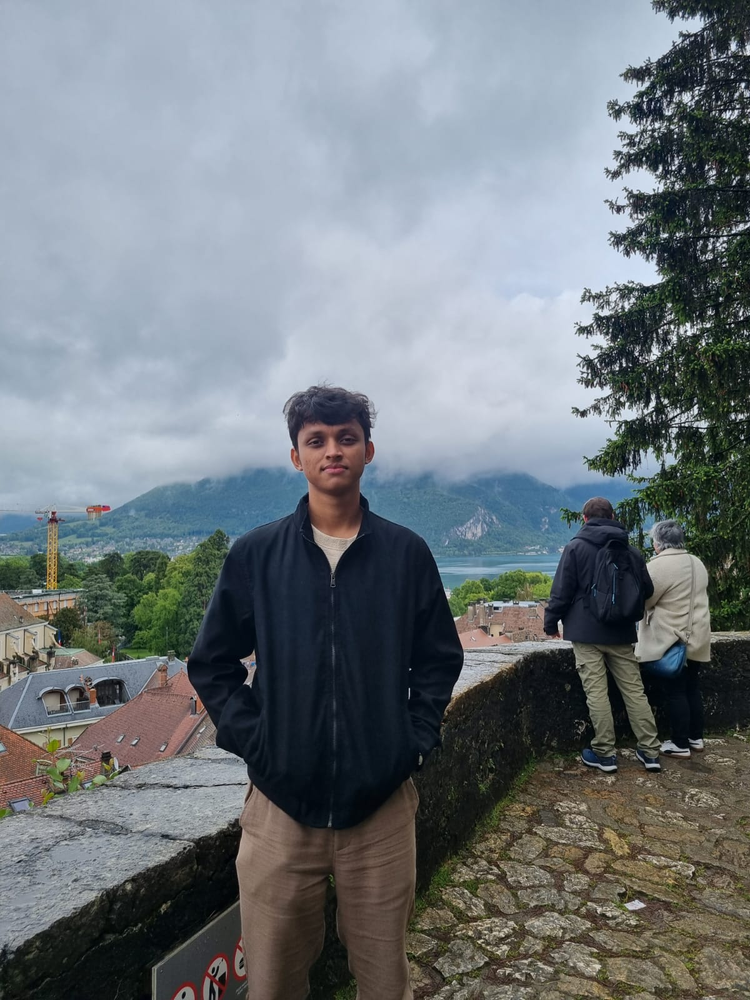

Hi, this is Arka!
- economist and researcher, almost
- China General Intern · Agriculture & Commodities Division
- World Trade Organization, Geneva
- incoming PhD Scholar, Economics · IIM Ahmedabad (2027)
i am currently working at the intersection of international trade, climate finance, and agricultural economics — protectionism, deglobalisation, and the policies that shape production and food systems
who i am
i am a student of Economics with experience in Research, Data Analysis, Stata, and Analytical Writing. i am looking to pursue a career in research: either at multilateral bodies, or in academia. my interests lie all across microeconomics, and some bits of macrodevelopment: in agriculture, energy economics, production economics, trade, and climate finance.
i have a B.Sc. (Honours) in Econ from University of Calcutta, and have completed my MA in Econ from IIT Madras (NIRF #1 Overall, QS #170 WUR Overall). i have received a doctoral programme (DPM) offer in Econ from IIM Ahmedabad (NIRF #1 Management, QS #21 Business and Management Studies).
i am currently a China General Intern (chosen as one of five globally for an end-to-end sponsored internship) at the Agriculture and Commodities Division (AGCD) of the World Trade Organisation (WTO), scheduled May-December 2026 in Geneva, Switzerland. here, i am working on researching public stockholding systems and sustainable agriculture policies across countries.
i have also interned for the Department of Economic Affairs, Ministry of Finance, Government of India, in the Climate Change Finance Unit under the Economic Division, in Delhi, India, and prepared research insights for the country input to the UNFCCC SCF on sustainable agriculture and resilience in food systems. here i also provided support in the work toward developing the country's climate finance taxonomy.
earlier, i have had the opportunity to work for a nonprofit thinktank, Foundation for Democratic Reforms, under Dr Jayaprakash Narayan in Hyderabad, India, where i researched primary healthcare systems and voting mechanisms across countries and compared best practices with India.
i am looking for work in the January-May 2027 bracket at institutions and organisations which have faculty and teams aligning with my research interests in climate finance and agriculture, looking especially at such institutions in Europe, SE Asia, India, and Oceania.
what i like
what's led up to now
-
2027 —
PhD scholar (DPM), economics Indian Institute of Management Ahmedabad
offered a seat to the Doctoral Programme in Management (DPM), Economics area, for 2026: deferred to a 2027 start to prioritize WTO commitments. IIMA: NIRF #1 Management, QS #21 Business & Management Studies.
-
May–December 2026
China General CoA-SS Intern, Agriculture & Commodities Division World Trade Organization, Geneva
selected as one of five interns worldwide for an end-to-end sponsored placement. researching public stockholding systems and sustainable agriculture policies across member countries.
-
May-July 2025
Research Intern, Climate Change Finance Unit Department of Economic Affairs, Ministry of Finance — Delhi, India
prepared research inputs for India's country submission to the UNFCCC Standing Committee on Finance (SCF) on sustainable agriculture and resilience in food systems. supported work toward developing the country's climate finance taxonomy.
-
December 2024- January 2025
Research Intern Foundation for Democratic Reforms — Hyderabad, India
worked under Dr. Jayaprakash Narayan; researched primary-healthcare systems and voting mechanisms across countries, benchmarking best practices against India.
-
July 2024-May 2026
M.A. Economics Indian Institute of Technology Madras
master's thesis supervised by Dr. Sabuj Kumar Mandal. IIT Madras: NIRF #1 Overall, QS #170 WUR Overall. graduated with an 8.31 CGPA, built by taking on demanding and rewarding courses in production economics, advanced mathematics and statistics courses, and panel data analyses
September 2021-July 2024
Stood 4th in my batch with a CGPA of 7.667. Graduated with knowledge in advanced econometrics, basic economic theory, and an interest in development economics.
Contact
- Based in
- Geneva, Switzerland
- Elsewhere